TL;DR: Workload imbalance is one of the major problems in training long-context LLM models. Imbalance among data parallel (DP) and pipeline parallel (PP) workers introduces stragglers or bubbles that causes severe slowdown, and the problem becomes more severe as we scale to longer context lengths or more GPUs.
We believe that one of the major reasons for this slowdown is that the core attention, i.e., the $\text{softmax}(QK^T)V$ kernel, colocates with the other linear parts. We argue that by disaggregating the quadratic part of the core attention computation from the linear part of the rest, we can fundamentally eliminate the imbalance and achieve near-linear scaling for long-context LLM training.
In this blog post, we first show why imbalance is a fundamental problem in the current wave of long-context LLM training, and then show how our technique core attention disaggregating (CAD) can fundamentally eliminate imbalance across different GPUs (DP/PP ranks) without introducing extra overhead. We built a system prototype, DistCA, that achieves up to 1.35× speedup over state-of-the-art training systems.
Why is Imbalance a Fundamental Problem of Long-Context LLM Training?
LLMs with long-context ability have become the norm and the backbone of many modern applications - from coding assistants to agents that need to reason over entire repositories or databases. Yet, training these long-context models remains extremely costly. Compared to short-to-mid-context pretraining (e.g., 32K tokens), extending the context to 256K or 1M+ increases the core attention computation - $\text{softmax}(QK^T)V$ kernel - quadratically with sequence length, which causes severe imbalance across different GPU devices and training parallelisms. Empirically, this imbalance has emerged as one of the major bottlenecks in today’s LLM training; as some anecdotally described, Meta Llama-3 training on 128K experienced a 1.44× slowdown because of imbalance across GPUs, and others estimated a 2-4× slowdown when training models with 256K context length. Given that large-scale LLM training often spans weeks or months, this inefficiency substantially increases total training cost.
To understand this imbalance, let’s dive deeper and revisit what happens during LLM training.
LLM architecture and core attention (CA). Figure 1 shows the structure of a typical LLM model within a layer, and Figure 2 clarifies our terminology around core attention. Slightly different from other literature, we explicitly use the term core attention (CA) to refer only to the computation after QKV projection and before O projection (e.g., FlashAttention). CA only contains the (O(n^2)) computational component. It is important to distinguish core attention and attention from the standard literature. When people refer to attention, they include the QKVO projection - the linear computation components - as well. Core attention, in contrast, only performs the computation after the QKV tensors are prepared and only produces a small output tensor.
We then treat the other components within a layer as pre core attention and post core attention components. The pre-core attention components include the QKV projection, and the post-core attention components include the O-projection and FFN. Note that all of the components are linear computations.
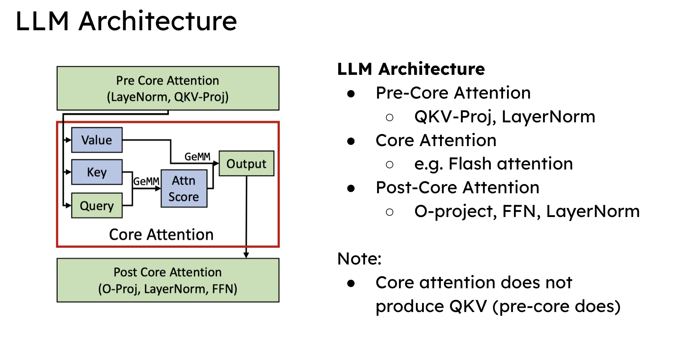
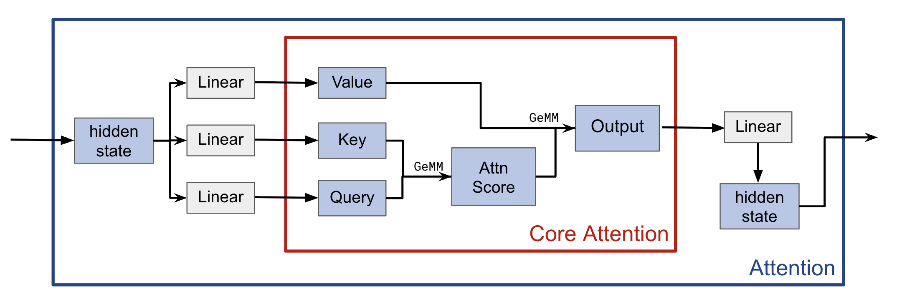
It turns out that the fundamental imbalance is mainly caused when we have to run core attention, which has quadratic complexity, with other linear components on the same devices, given that training documents might have different lengths, as we will explain next.
Document Packing. Documents come in variable lengths. To ensure efficiency, modern LLM training systems use document packing that packs the documents into batches such that each batch has the same length but contains multiple documents. See Figure 3 for a contrast.
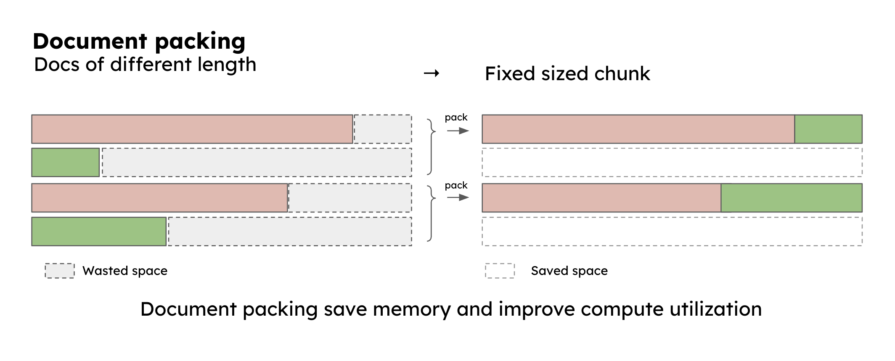
However, document packing introduces imbalance in the attention operation across different batches. Figure 4 shows an example. Suppose we have 2 batches: batch A has only one 128K document, and batch B has 16K x 8 documents. If we only consider core attention, batch A has 8× the latency of batch B because of the quadratic compute cost of core attention.
Notice that this imbalance only comes from core attention: because batch A and B always have the same number of tokens, all of the linear components are perfectly balanced.
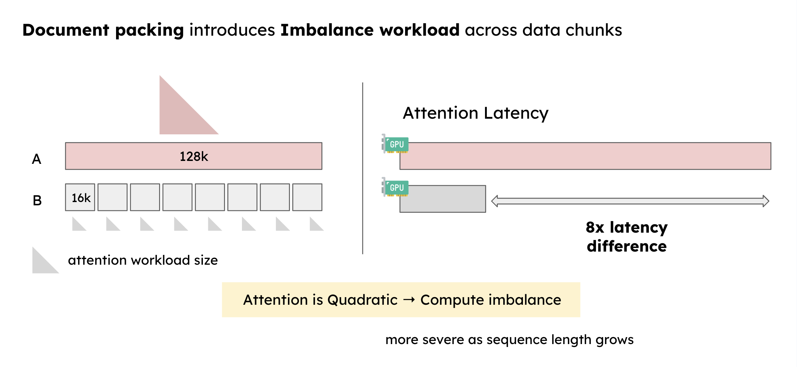
Even worse, this imbalance will become much more pronounced when we push context length to a much larger scale (e.g. 1M), or scale the training to more GPUs. Next, we will explain how scaling up and using different parallelism strategies for training causes this imbalance to be more severe.
Parallelism Strategy in Distributed LLM Training Systems.
Designing the right parallelism strategy is crucial for large-scale distributed LLM training, and people usually choose to use 4D parallelism: Tensor Parallel (TP), Pipeline Parallel (PP), Data Parallel (DP), and Context Parallel (CP). In practice, a substantial amount of effort is spent tuning these parallelism dimensions, yet inefficiencies such as stragglers and pipeline bubbles often persist.
We found that blindly scaling DP, PP, or CP will amplify the imbalance and make overhead dominant very quickly.
Data parallel introduces stragglers when DP ranks process microbatches with uneven core attention workload (and the same total token length). In DP, a training iteration has an optimizer step that synchronizes the gradients (all-reduce) from all ranks. When different DP ranks process microbatches with uneven core attention workload, the latency of the optimizer step is bound by the slowest worker (with the most core attention workload within its microbatch). Figure 5a shows the total percentage of time that GPUs are unutilized because of stragglers as a proxy to measure the aggregate waste of GPU hours. The number grows very quickly from ~2% in DP2 to an astounding 55% in DP8, as a direct result of stragglers in the DP rank with more attention computation.
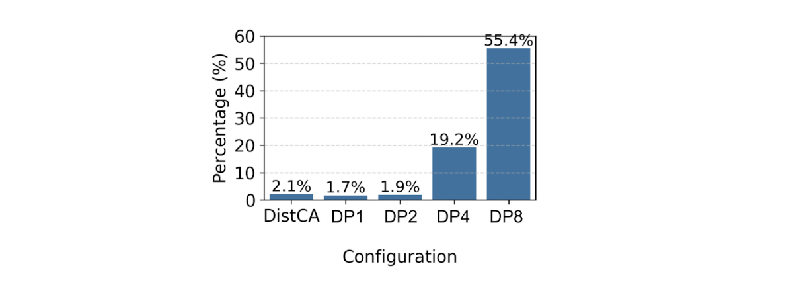
Pipeline parallel further amplifies the imbalance problem. In PP, microbatches with uneven CA computation propagate along the pipeline, causing cascading amplification of the latency. Figure 5b shows such an example in a simple 1F1B schedule: when one microbatch (microbatch #1) has a much heavier computation, it affects the later microbatch schedule and introduces much more severe pipeline bubbles across stages. Techniques such as variable-length sharding*(1) try to mitigate this by putting documents from a compute-heavy batch into less-heavy batches, but this invites significant memory imbalance across the microbatches and cannot mitigate imbalance across PP stages. This shows that naively scaling DP or PP will make imbalance more pronounced.
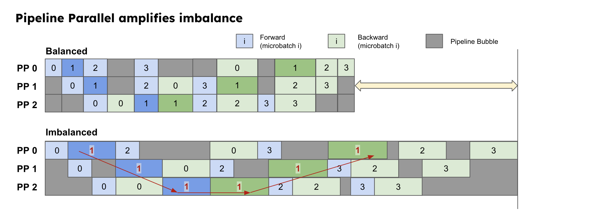
As an alternative, Context parallel (and variants such as per-doc context parallel sharding*(2)) shards each document (q-tensor) across context parallel workers in a way that has equal FLOPS. However, to compute the CA, each q-tensor shard also needs to have its associated KV tensors. This means context parallel also needs to all-gather the KV tensors across all GPUs, whose latency can quickly become dominant. Figure 5c shows that as we scale CP degree, the latency of all-gather increases from 2% (CP2) of the total latency to 50% (CP32). Worse, the memory consumption of all-gather also increases significantly - from just <5% (CP2) of total memory to ~20% (CP16) just for storing the global KV tensors. Therefore, naively scaling CP will introduce a significant compute and memory overhead that prohibits further scaling.
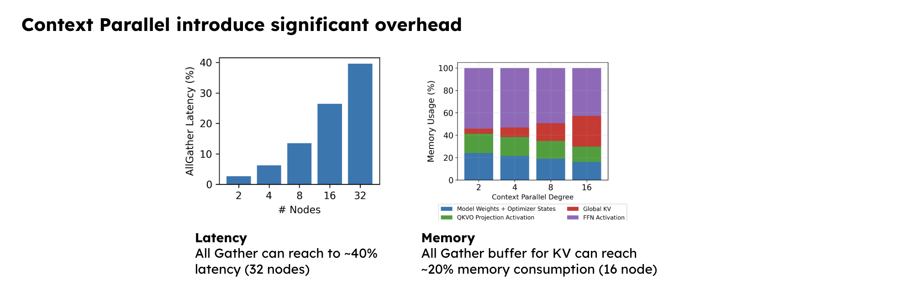
In summary, we believe the fundamental limitation of current parallelism strategies in long-context training is colocation: colocating core attention and other linear components will always introduce compute or memory overhead that is hard to mitigate. This motivates us to disaggregate core attention from other components to fundamentally address the imbalance problem, as we will see in the next section.
CAD: Core Attention Disaggregation
The solution is simple: disaggregate CA from the rest of the model and treat CA as an individual unit of work (attention task) to be scheduled on different devices (attention server). This makes balancing core attention a much easier task without the need to care about the memory and compute overhead introduced by having linear components.
Figure 6 shows such an architecture. Once disaggregated, we can balance the core attention computation as individual units across all GPUs while maintaining the linear parts unchanged.
At first glance, disaggregation seems to introduce some additional overheads: (1) it introduces extra compute to slice-and-dice attention tasks to balance them, and (2) extra communication to move QKV and output tensors between the training workers and the attention servers. Surprisingly, we show that these problems can be solved by leveraging a few interesting compute and communication characteristics of core attention. Using these techniques, we effectively eliminate these overheads.
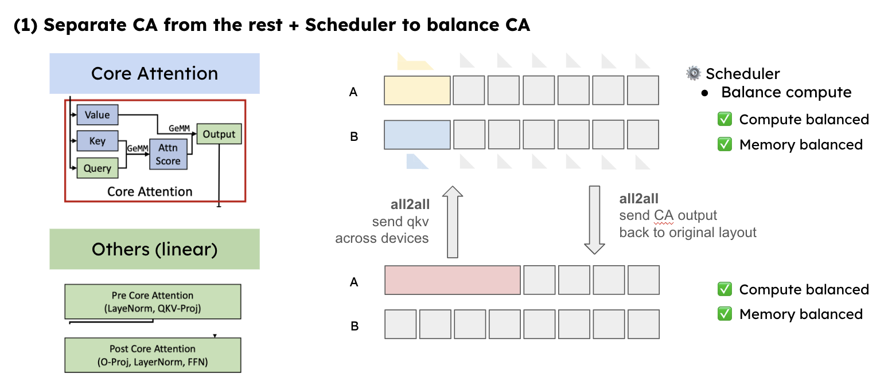
1/ CA kernel can be divided and re-combined (almost arbitrarily). In modern attention kernels (e.g., FlashAttention), each GPU thread block is assigned a tile of the core attention computation. The kernel can sustain high MFU on variable-length fused sequences, provided its size is larger than this tile. As shown in Figure 7, if each CA shard length reaches 128 or more, the CA kernel throughput will be near peak throughput. This means attention tasks (documents) can be arbitrarily sharded, then recombined into a single high‑occupancy CA kernel without hurting kernel efficiency. Therefore, disaggregation does not introduce extra overhead for balanced attention tasks.
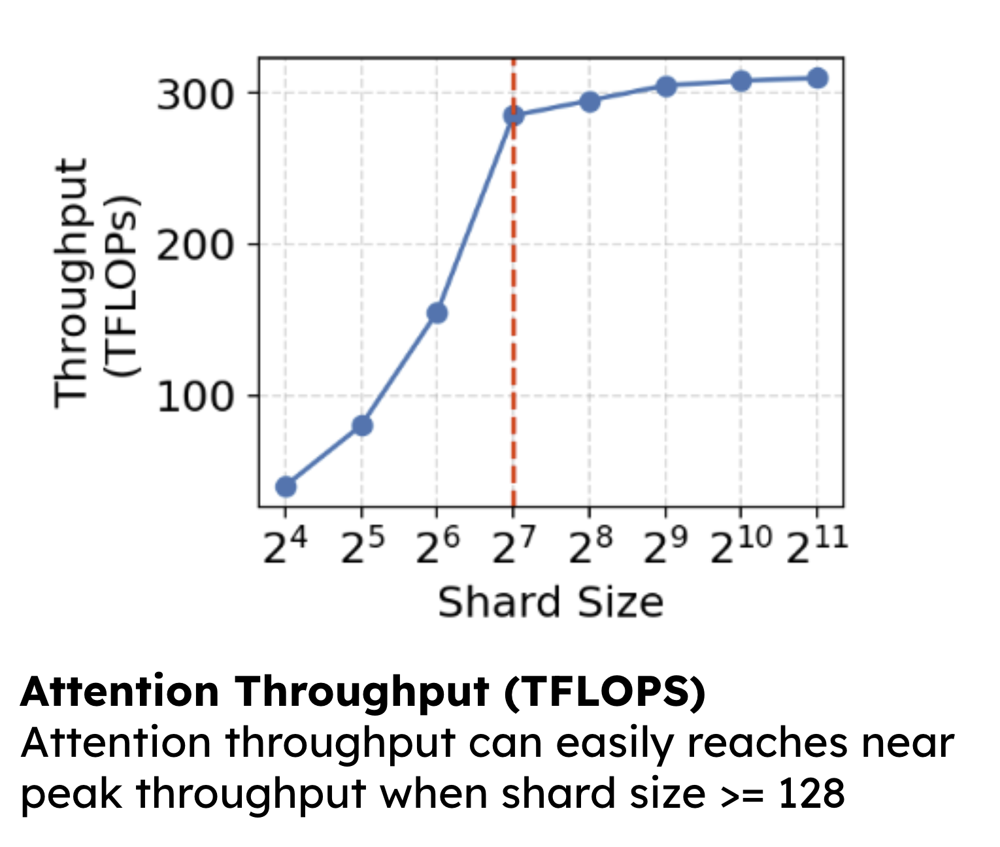
2/ CA communication cost can be much lower than context parallel. Sending attention to/from the attention server seems to introduce more overhead compared to context parallel. But we observe the opposite: unlike all-gather that sends all the KVs to each device, rebalancing CA only requires sending the necessary QKV to other devices to effectively balance the computation. As shown in the animation, CAD can shard the long document and only move the shard large enough to achieve compute balance across different batches. This makes CAD’s network communication much lower compared to context parallel.
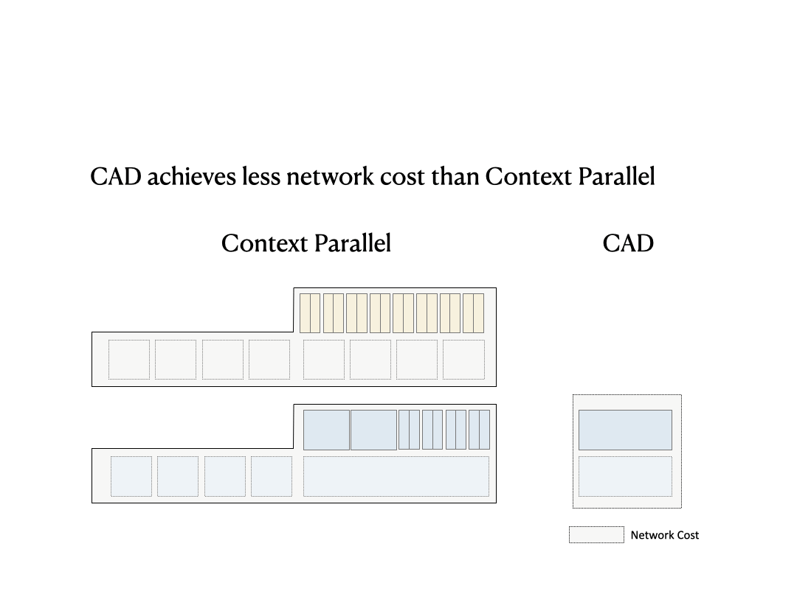
3/ Ping-pong pipelining can hide communication (almost entirely).
One may have observed that despite the smaller volume of communication, CAD still introduces two all-to-all communications for each layer in the forward (and backward) passes, and this additional synchronization may seem to offset the communication savings. Fortunately, LLM training typically uses large batch sizes (>= 2) to maximize throughput, and this enables us to use ping-pong pipelining to overlap communication with computation, thereby eliminating the additional all-to-all communication overhead. As Figure 9 shows, we take a multiple of 2 microbatches (mb) every iteration, and at the end of a stage of the first mb (e.g., Pre.0), we take the second mb to run its computation (Pre.1) and launch the network communication for the output of Pre.0 (the green box underneath Pre.1). In practice, as we scale to larger context length, the latency of computation will become large enough to overlap with communication. Therefore, using ping-pong parallel can effectively hide the communication overhead.
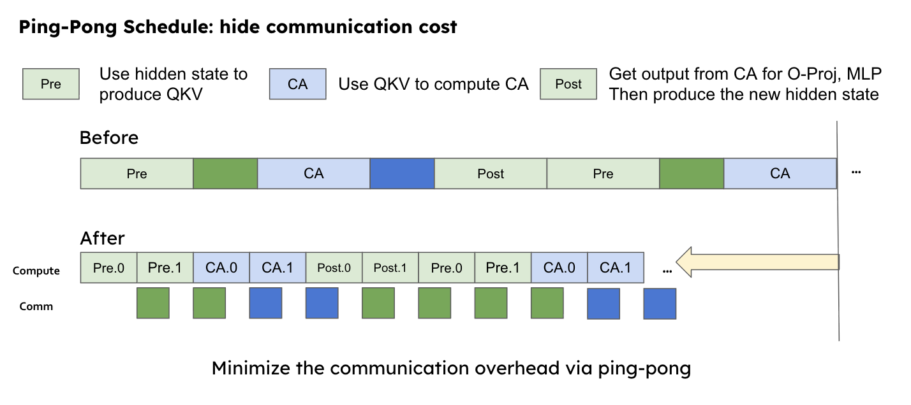
4/ Imbalanced attention tasks can move across PP stages for balanced computation.
Another major advantage of CAD is that GPUs from different pipeline-parallel (PP) ranks can now jointly balance core attention (CA) workloads. With CAD, we can design PP to alternate cleanly between CA and non-CA components. Since CA operates without weight parameters, its computation can be dynamically dispatched to GPUs in other PP ranks, thereby balancing the computation across PP stages. As shown in Figure 10a (micro-view), within one forward layer, CAD can dispatch CA workloads to (1) idle GPUs in different PP ranks, or (2) rebalance CA tasks to different PP ranks. As shown in Figure 10b (macro-view), we remove most pipeline bubbles (!) in pipeline parallelism without incurring extra overhead. Note that this is hard to do in conventional pipeline parallel schedules, because workload dispatch is confined within each stage, preventing cross-stage coordination. As the pipeline becomes deeper, this imbalance between microbatches amplifies even more and makes pipeline bubbles become increasingly difficult to eliminate.
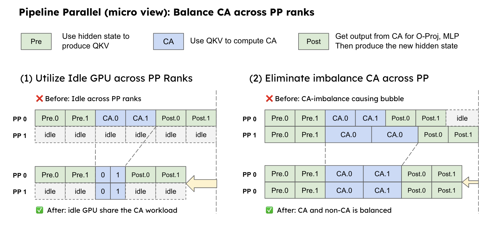
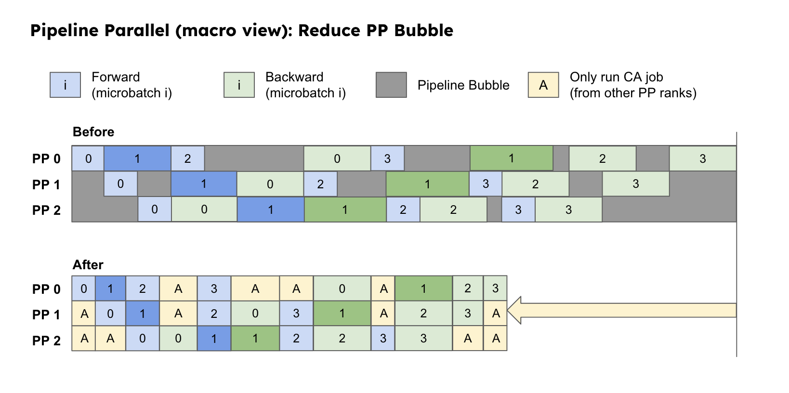
Together, these features make CAD a compelling design to fundamentally eliminate imbalance in modern LLM training systems for long-context learning. Next, we present DistCA, our system implementation that brings CAD into practice.
DistCA: System Design and Evaluation of CAD
We design the system DistCA that puts CAD as the first-class primitive in the LLM training system. We introduce attention server, a new form of parallelism that only handles core attention tasks (CA tasks). Since CA only depends on QKV tensors, an attention server does not need to hold any model weights for the computation, and is also stateless because neither the forward nor the backward pass needs to store any state in it. At each iteration (Figure 11), the DistCA scheduler designs the optimal plan to shard and distribute CA tasks to attention servers. Each worker first runs the pre core attention (Pre-CA) modules, and then dispatches the QKV tensors according to the scheduler plan to the attention server via all-to-all communication. After the attention tasks are all done, the attention server sends the CA outputs back to the original layout and continues to run the post core attention parts. The DistCA runtime manages the model forward logic, network dispatch for CA tasks, and uses ping-pong parallel to overlap network communication with computation.
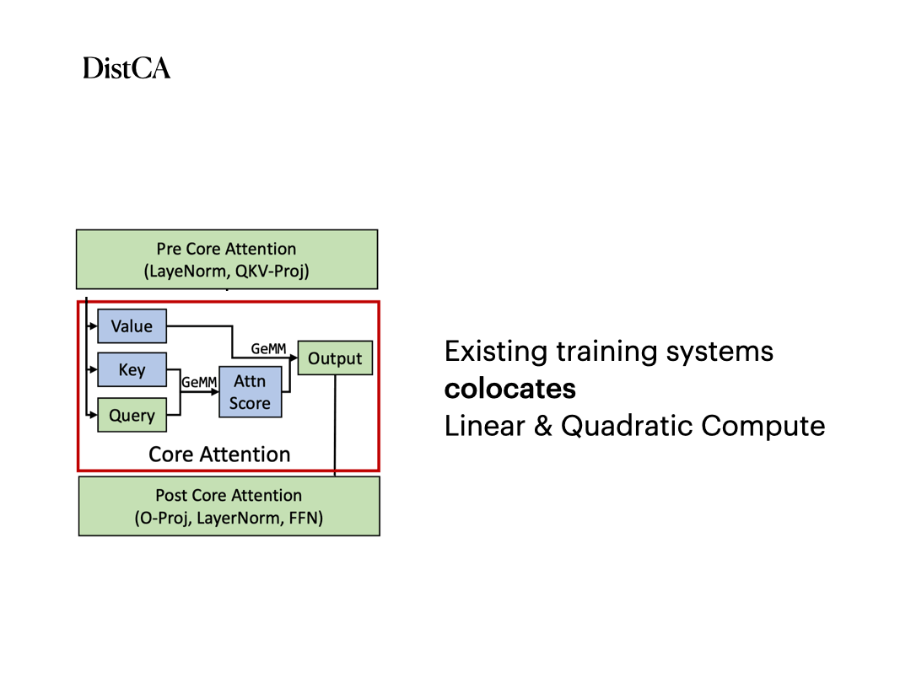
One challenge is that assigning the attention servers into a dedicated pool of GPUs wastes a lot of memory and also underutilizes GPUs. To solve this, DistCA makes each GPU time-share between the CA and non-CA phases: each GPU alternates between the role of an attention server and a normal worker. This maintains high memory and compute utilization and balanced computation across devices.
We implement DistCA on top of Megatron-LM to make disaggregation a first-class primitive in the system. We evaluate the system on synthetic distributions and a real dataset (Prolong), two model sizes (Llama-8B and Llama-34B), on up to 512K context length and up to 512 H200 GPUs with a high-speed interconnect (400 Gbps InfiniBand) across nodes. DistCA delivers up to 1.35× end-to-end throughput improvement, eliminates DP/PP stragglers, and maintains near-perfect balance while fully hiding CAD’s communication.
See our paper for more fine-grained experiment results.
Existing Systems that mitigate imbalance
Existing systems that try to mitigate the imbalance of CA mostly fall into two categories: variable-length data chunking and per-document context parallel sharding.
1. Variable-length data chunk.
To mitigate CA imbalance, one natural way of thinking is to swap some documents from the more compute-heavy batch to the less compute-heavy one. As illustrated in Figure 12a, we swap 4x 16k documents from batch A to batch B to mitigate the imbalance between batch A and B, and in this way, we try to make their computation as balanced as possible.
But this method has many serious drawbacks. (1) It causes memory imbalance between batches. In this example, after moving the data chunks, B requires 3x the memory compared to A. The memory divergence can easily go up to 1.2x across 8 nodes, and grow even more as data parallel scales. (2) As sequence length grows, the GPU memory becomes much easier to saturate, and therefore simply moving documents around will fail to fully equalize attention compute due to these memory constraints. Figure 12b shows that compute underutilization (measured by the total percentage of time GPUs are stalled) can quickly go from just 2% in DP2 to up to 55% in DP8. As context length increases, variable-length data chunking will not be able to mitigate the imbalance of core attention anymore.
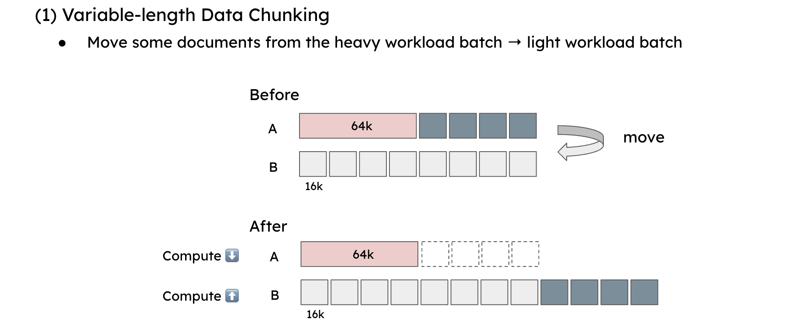
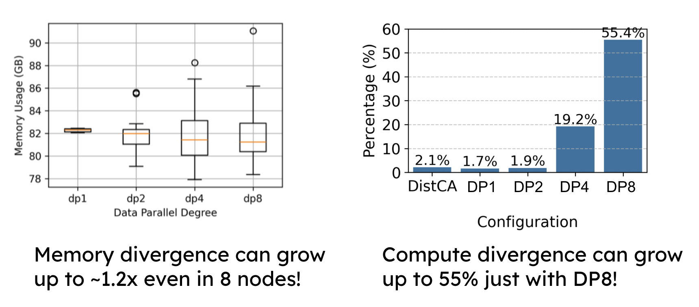
2. Per-document context parallelism.
Another way to mitigate CA imbalance is to use per-document context parallelism (proposed in WLB-LLM). Essentially, as shown in Figure 13a, for each batch, we take each document and split it into CP shards (head-tail sharding) such that they have exactly the same computational workload. At data loading, we reorganize the tokens; and then at each layer forward, after producing the QKV in each CP rank, we perform an all-gather to gather all the KVs for the Q in this rank, and then perform core attention. This ensures each CP rank has exactly the same core attention workload, therefore balancing the attention time.
However, per-doc CP also has two major drawbacks. First, assuming CP is placed across nodes, the all-gather operation does not scale well when the CP group grows larger. Figure 13b shows that the all-gather overhead can quickly rise to around 40% when CP=32, or even 12% when CP=8. At the same time, the memory consumption used for all-gather grows from just 2% for CP=2 to almost ~20% at CP=16. These bottlenecks fundamentally limit the scalability of per-document CP.
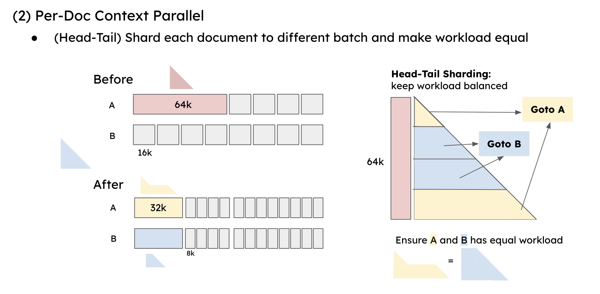
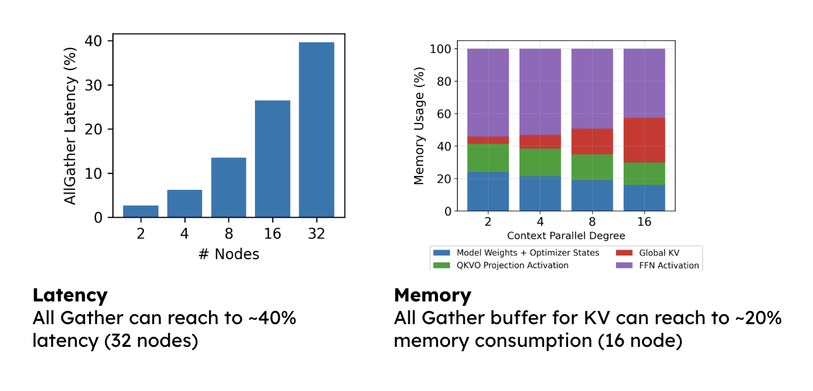
Existing training systems in academic work including WLB-LLM, FlexSP, and Zeppelin use a combination of these techniques. But they still fundamentally have these problems: they either naturally invite memory imbalance across different ranks, or introduce extra network and memory overhead. CAD fundamentally eliminates these problems and shows strong performance when scaling to longer context and larger scale.
DistCA Today and Future Work
Disaggregating core attention fundamentally eliminates the imbalance in large-scale LLM training systems. Our DistCA system efficiently rebalances CA workloads across devices, leverages ping-pong pipelining to hide communication overhead, and employs in-place attention servers to maximize GPU utilization. Together, it achieves both higher throughput and better scalability without architectural changes to the model.
Looking ahead, we believe CAD represents just the beginning of a broader disaggregation trend in training systems. We believe that disaggregation opens the door to treating each component as a service, and even utilizing heterogeneous hardware to tailor each phase for better GPU utilization and lower cost while ensuring high throughput.
We are open sourcing DistCA to foster collaboration and further research in disaggregated LLM training. If you are interested in using or contributing to our artifact, contact us!
Citation
@article{zhuang2025efficient,
title={Efficient Long-context Language Model Training by Core Attention Disaggregation},
author={Zhuang, Yonghao and Chen, Junda and Pang, Bo and Gu, Yi and Zhu, Yibo and Jiang, Yimin and Stoica, Ion and Xing, Eric and Zhang, Hao},
journal={arXiv preprint arXiv:2510.18121},
year={2025}
}